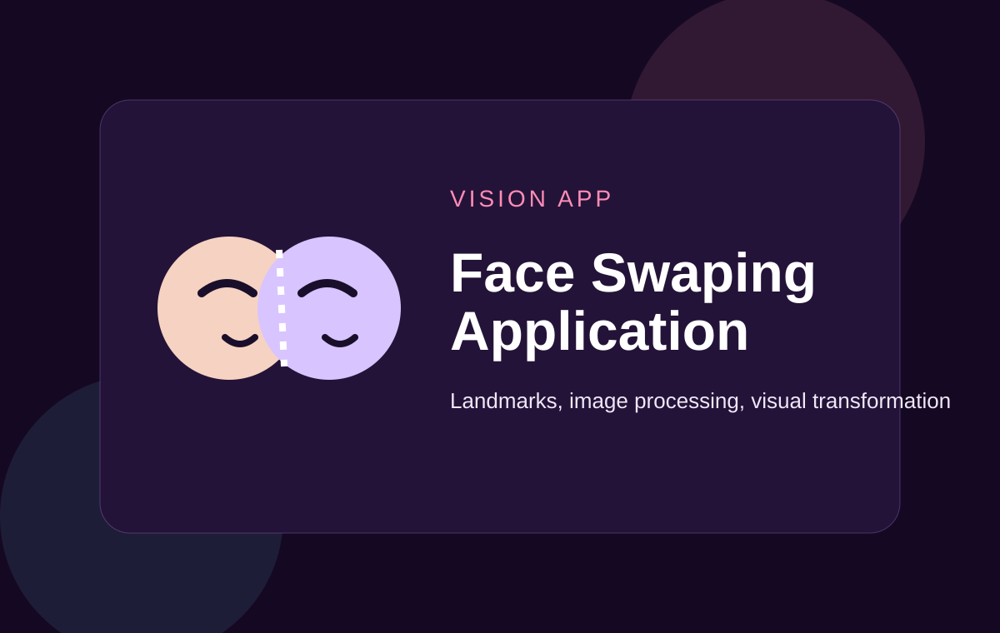

Role
Computer Vision Developer
Computer vision project based on face alignment, landmark detection, and image processing for face swap workflows.

Computer Vision Developer
Image processing build
Working facial landmark-based swap application for image processing practice.
This project explores face alignment, swap logic, and visual transformation workflows. It demonstrates practical computer vision concepts through an image-processing-focused application.